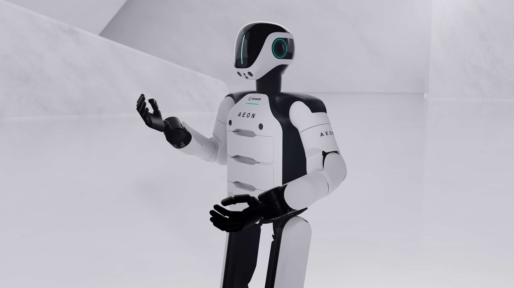

PRODUCT PROFILE / 配置资料
AEON官网工业配置
海克斯康机器人 · 轮式人形 · 试点
工业操作、检测与实景采集平台，采用带轮的腿部运动方案；本站归入轮式人形以区别纯双足步行。官网称正在工业部署，发布资料列客户试点，本次未核实普遍可购买。自动换电维持作业，不等于单电池 24 小时。

完整规格与依据
身体规格
- 身高
- 165 cm 已核对原文 · 厂商资料
官网产品规格；姿态条件未列
本项资料核验 2026-10-24 - 整机重量
- 60 kg 已核对原文 · 厂商资料
官网产品规格；电池和末端包含口径未说明
本项资料核验 2026-10-24 - 自由度
- 34 DoF 已核对原文 · 厂商资料
官网 Degrees of freedom；未分项说明手部/底盘计数范围
本项资料核验 2026-10-24 - 末端执行器
- 待核实
【本轮未找到】当前规格表确认工业操作，却未给末端手/夹爪SKU与DoF；不从展会照片定标配。
本项资料核验 2026-10-24；相关链接不表示厂商从未披露。
运动与操作
- 操作负载
- 8 kg 已核对原文 · 厂商资料
官网 constant carry 持续携带口径，未说明单臂/双臂；另列短时 15 kg，不作为持续负载
本项资料核验 2026-10-24 - 移动速度
- 2.4 m/s 已核对原文 · 厂商资料
官网 Top speed；负载和地面条件未说明
本项资料核验 2026-10-24
电池与工作
- 工作时间
- 5 h 已核对原文 · 厂商资料
官网单次充电自主工作时长，具体任务未列；约 1 分钟换电与 24/7 宣传不计入单次续航
本项资料核验 2026-10-24 - 电池能量
- 待核实
【本轮未找到】产品页给单次5 h和自动换电，但没有取得电池Wh；24/7并非单包能量或续航。
本项资料核验 2026-10-24；相关链接不表示厂商从未披露。 - 电池容量
- 待核实
【本轮未找到】所查产品页未给Ah/mAh及标称电压；换电分钟数不足以反算。
本项资料核验 2026-10-24；相关链接不表示厂商从未披露。
感知与开发
- 感知配置
- 待核实
【配置归属未明】发布稿只给多模态传感器融合与精密测量，没有本批次的类型/型号/数量清单；不把Hexagon全部测量产品当机器人标配。
本项资料核验 2026-10-24；相关链接不表示厂商从未披露。 - 计算平台
- NVIDIA Jetson（2025发布架构；当前批次型号待核） 待审核 · 厂商资料
2025-06-17官方发布确认Jetson；Omniverse/Azure是开发训练体系，不是机载CPU。本轮未将该架构逐批绑定到当前交付硬件，故保留待审核。
本项资料核验 2026-10-24 - 二次开发
- 待核实
【权限待核实】合作训练平台/遥操作不等于客户SDK；未取得AEON开发包权限范围。
本项资料核验 2026-10-24；相关链接不表示厂商从未披露。
采购信息
- 美元报价
- 待核实
【报价待采集】本轮产品页为企业联系入口，未取得本配置美元整机条款；不把试点成本当零售价。
本项资料核验 2026-10-24；相关链接不表示厂商从未披露。 - 人民币报价
- 待核实
【报价待采集】未取得AEON人民币整机报价，不换算其他采购方案。
本项资料核验 2026-10-24；相关链接不表示厂商从未披露。